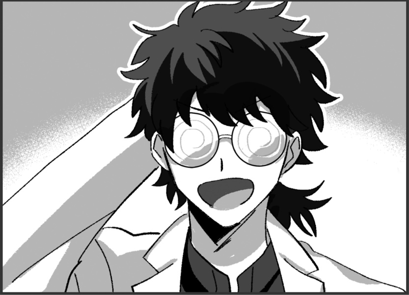

メインログ / 雑談ログ
キャラシート
| 父親： | 巨肩矢委人 | (キャラシート) | PL：がぶらす |
| 母親： | フランベルジュ | (キャラシート) | PL：雅 |
| 長男： | ヴォルグ | (キャラシート) | PL：灸 |
| 長女： | クリスタ=フォン=グラスマン | (キャラシート) | PL：ふろずん |
| 次女： | 雲峰詩音 | (キャラシート) | PL：めい |
目次
■プリプレイHO&PC紹介
■オープニングフェイズ
01 本物の偽物
■ミドルフェイズ
02 月曜日、新しい生活の始まり
プリプレイ
■共通ハンドアウト
ワークス / カヴァー:自由 / 自由
ロイス:"パパラッチ"
推奨感情:P 自由 /N 自由
諜報専門の FH エージェント、通称 ” パパラッチ ”を UGN が取り逃がしたのが数週間前の話。
彼が逃げたと思われる薄雲市に潜入し”パパラッチ ” を見つける為、キミ達は敵にバレぬように家族を装って引っ越す事になる。
GM : では、始めに自己紹介から！まずお父さんどうぞ
巨肩 矢委人 : はーい！簡潔にということなのでできるだけ簡潔に

巨肩 矢委人 :
名前は巨肩矢委人(おおかたやすと)、年齢は17！
見た目は大人で中身は少年…だけど大人びてはいる子
よくチルドレンの教官と間違われるよ
でもやっぱり子供ではあるから、色々拙いところはある
カバーしてあげてほしいなって
巨肩 矢委人 :
ビルドについて
クライマックスに万色の檻で大殴りする殴りオルクス！
妖精の手もあるぜ
途中で武器が一個買えると嬉しいです
巨肩 矢委人 : 【ゆとシート】、【キャラクター登録所】
GM : 老けてるけど若いお父さん…調達についてはあとで1つ注意点がありますが全然できると思う！
GM : じゃあ次はお母さんどうぞ～
フランベルジュ : はーい！自分は更に簡潔に

フランベルジュ :
名はフランベルジュ、性は捨てた！
年齢は数百歳！Dロイス『古代種』の力でずっと幼い外見のまま生きてきました。一応UGN側で働いてるらしい。
フランベルジュ : 言動も幼いけど、どこか外見と不相応で物騒なことを口走ったりします。怖いね。
フランベルジュ :
そして現在はラウレスアレアという場所でお偉いさんやってます！詳しくはここを見てね！
https://lisp-trpg.sakura.ne.jp/upload/upl/_Mf7jA8rjFGw2SZWxZ7g/00499.html
フランベルジュ : シンドロームはピュアのソラリス。薬物の力で敵の精神を蝕み、デバフをかけるぞ！
フランベルジュ : 「そんなお母さんだよ！よろしくね！」
フランベルジュ : 【キャラクターシート】
GM : ありがとう！逆に見た目若いけど古代種でもうこの時点で雰囲気が危うい…
GM : 次は長男さん！
ヴォルグ : はーい

ヴォルグ :
名前はヴォルグ、年齢は32歳
雪女伝説のレネゲイドビーイングです！
元はFH寄りの情報屋、今は色々あってUGNに所属しています。
ヴォルグ : ぼんやりしているように見えて自分の損得で動き、好きな事をして好きな物を食べて生きてる。人生(?)楽しければなんでもよし！なタイプ
ヴォルグ :
シンドロームは氷特化のサラマンダーとブラム＝ストーカー
わざと攻撃を受けてカウンターをとったり自らの体力を削って戦うゾンビアタッカータイプです！
ヴォルグ : 【キャラクターシート】
GM : お兄ちゃん(32歳)おるね…お父さんがしっかりしてるけど未成年やから支えてあげてほしい…紹介ありがとう！
GM : じゃあ今度は長女さん！
クリスタ : よくってよ！

クリスタ : クリスタ=フォン=グラスマン！ 齢は15！
クリスタ : ドイツ出身の高校1年生の御嬢様ですわ！
クリスタ : 自身が貴族である事に誇りを持っていて、いつも自分磨きに余念がない女性ですの！
クリスタ : 特に"美"に関する意識の高さについては、トップモデルのソレと肩を並べるレベル！
クリスタ : それはそれはイロイロなコトを我慢して"美の頂点"への階段を昇っているのですッ！
クリスタ : ……そうした"努力"を続けてきた影響で、プライドの高いレディになっていますの！
クリスタ : また自他共に厳しいので孤高な人ですが、今回は疑似家族ができるということで！！ どういう関係になるのか愉しみですわ！！
クリスタ :
戦闘では「Dロイス：秘密兵器」等で取得したEXレネゲイド※を駆使して戦います！
※レネゲイドに感染した物品
クリスタ : RC技能で≪インビジブルハンド≫による範囲攻撃を行なう他、装甲諸々のおかげで合計43点のダメージ軽減ができますの！
クリスタ : 自分の身体は守って当然よね、だって手入れした肌が傷付くなんて許せないもの！！
クリスタ : ……そんなところですわ！
クリスタ : 【キャラクターシート】
GM : ああ、お嬢様！ご紹介ありがとうございます、一般家庭生活でのお嬢様の奮闘に期待していますわ…！
GM : 最後になりました、次女ちゃんどうぞ！
雲峰詩音 : はい！

雲峰詩音 : 雲峰詩音（くもみねしおん）、16歳のUGNチルドレンです。
雲峰詩音 : ≪急速分解≫で触れたものを灰に出来るけど、その代わりに常に周りが灰塗れになるところから、コードネームはシンデレラになりました。
雲峰詩音 : 対抗種のDロイスを持っているキャラで、オーヴァードは触れた箇所が火傷するような痛みを伴って灰化します。
雲峰詩音 : フレーバー設定だからHPダメージは無いけど、PCにも影響あるのでこのキャラに触る時には覚えといてもらえたらなって思います。一応服の上の部分ならギリ大丈夫です。
雲峰詩音 : 性格としては心に壁を作っていてあまり人と深く関わろうとしない暗い奴です。与えられた任務を成功させることだけ考えて生きてます。
雲峰詩音 : ビルドはモルフェウス/バロールのRC型で、≪砂の刃≫で灰を操って戦います。
雲峰詩音 : あとは≪孤独の魔眼≫で範囲攻撃の対象を自分一人に変更したり、≪時の棺≫で判定失敗にさせたりも出来ます。
雲峰詩音 : 以上で！
雲峰詩音 : 【キャラクターシート】
GM : 悲しい設定しとる…この卓通して人とちょっとずつでも触れ合っていってほしいね
GM : ではでは、今回はこの5人でやっていこうと思います。DX3rd『オーヴァード家族物語』始めていきます！
メインプレイ
シーン1 本物の偽物
GM : オープニングは全員登場です！
巨肩 矢委人 : 1d10＋29(1D10+29) ＞ 4[4]+29 ＞ 33
フランベルジュ : 1d10＋32(1D10+32) ＞ 7[7]+32 ＞ 39
ヴォルグ : 1d10+40(1D10+40) ＞ 7[7]+40 ＞ 47
クリスタ : 1d10+45 侵蝕率初期値でも一番ですわ～～～～(1D10+45) ＞ 10[10]+45 ＞ 55
雲峰詩音 : 1d10+33(1D10+33) ＞ 1[1]+33 ＞ 34
UGN支部 会議室
GM : とある夏の暑い日、君たちは本部エージェントである本分 英二(ほんぶ えいじ)に呼ばれ、UGN支部の会議室へと呼び出されていた。
GM : だが、君たちは任務のため呼び出しを受けたというだけでまだその内容は知らされておらず、その場には本分英二の影の形もない。
クリスタ : ……その代わり、適度に冷房が効いた会議室のテーブルには、紅茶がふたつ並んでいた。
クリスタ : ふたつの紅茶を挟んで向き合うのは、ふたりのオーヴァード。
クリスタ : ──ひとりは、まるで御伽の国から来たプリンセスのような、それはそれは美しい少女。
クリスタ : 髪は金糸、肌は真珠、瞳は水晶。 ここに吟遊詩人がいたなら、そのように謳っただろう。
クリスタ : 「(……時間には可能な限りのヨユウをもって来たけれど、呼び出し人の姿はなし)」
クリスタ : 「(代わりに待ちあわせ場所にいたのは、矢鱈と背の高い男が一人、と)」
クリスタ : 「(……このワタクシをよびだしておいて失礼)」
クリスタ : 「(というか！ こんな背の高い日本人いますの！？ ソファが小さく見えますわよ！？)」優雅に紅茶を啜りながら、目の前の巨漢を観察する
ヴォルグ : クリスタの視線を感じつつ紅茶を飲んでいる、声を掛けようかとも思ったが今は他の面子を待った方がいいだろうと判断し、素知らぬフリをしている様子
ヴォルグ :
「（待たされるのは慣れてるが…気まずいな。）」
そっ…と視線を合わせないようにしながら
巨肩 矢委人 : ふと、規則正しいノックの音がする
クリスタ : 「……？ 本分様の御到着かしら？」チラ、と扉に目をやる
ヴォルグ : 心なしかホッとした様子で扉を見る
巨肩 矢委人 :
「失礼致します」
身長にして約180cmという長身のスーツの男が入って来る
クリスタ : ガシャン、とそこそこ大きな音を立ててティーカップを置く
クリスタ : 「(また巨体のオジサマ！？！？)」
ヴォルグ :
「！」
僅かに目を丸くして大きな音を立てたティーカップとクリスタを交互に見る
巨肩 矢委人 : 「！？…ええと、どうかしましたか？」
クリスタ : 「……いえ、なんでも」平静を装う
クリスタ : 「あなたは……本分様から言伝でも預かってきたのかしら……？」呼びだされたのは自分だけだと思っているので、遣いのエージェントだと勘違いしている
巨肩 矢委人 : 「？ ええと、失礼致しました。UGNチルドレン、"オーリーオーン"巨肩矢委人、到着致しました。自分は本部からの伝言は託かってはいませんが…」
クリスタ : 「UGNチルドレン？」
クリスタ : 「(……ああ、いえ、聞き間違いよね、聞き間違いだわ)」
クリスタ : 「それでは、あなたはどうして此処に？」
巨肩 矢委人 : 「はい、自分はエージェント・本分に召集を受けました」
クリスタ : 「……あなたも、本分様から召集を？」
クリスタ : 「では、あなたも？」ヴォルグ君に視線を移し
ヴォルグ : 「俺もエージェント・本分から召集を受けた。人数以外の内容は聞いていないがな…」
クリスタ : 「…………」
クリスタ : クリスタはごくごくごくと紅茶を一気に飲み干して、叩きつけるようにカップを置きます。
クリスタ : 「(どういう人選なの！？！？！？！？)」
クリスタ : 「(この麗しいワタクシと、あの巨漢二人がバディってコト！？！？！？！？！？)」
巨肩 矢委人 :
「(何か言いそうだけど何も言わないな…)」
固唾を呑んで見守っている
ヴォルグ :
「…ということはあと２人だな。」
落ち着きのない様子を暫く眺め、軽く咳払いをして漸く口を開いたかと思えば手帳を確認しながら呟く
クリスタ : 「あと二人！？ まだいるの！？」思わず声を出す。 巨漢が更に二人まとめて出てくる様子をイメージしているらしい。
巨肩 矢委人 : 「…？人数は私含めて5名という連絡は受けていたような…詳細は伝達されていませんが…」
クリスタ : 「……ワタクシのところに、そのような連絡はありませんでしたわ」
巨肩 矢委人 :
「んん…！何か考えが…」
苦しいフォロー
ヴォルグ :
「（伝達ミスか…？）」
手帳の伝達内容にも軽く不信感を抱きつつ
雲峰詩音 :
三人がそうしていると、部屋の片隅に異変が起きる。
縦横2m程度の空間が灰色に染まり、砂のようにサラサラと崩れて穴が空いたのだ。
ぽっかりと空いたその穴の中から、一人の少女が姿を現す。
雲峰詩音 :
「……失礼します」
≪ディメンジョンゲート≫を使い、空間を超えて部屋の中に入って来る。
クリスタ : 「……！」
クリスタ : 「(いきなり出てきて吃驚しましたが、女性です…！ 女性ですわ…！！)」一瞬だけ驚くが、すぐに胸を撫でおろす
雲峰詩音 : 「えっと……」 部屋の中を見渡して、本分がいないことを確認
雲峰詩音 : 「わたしは、任務に呼ばれて来たのだけど……」
巨肩 矢委人 : 「エージェント本分から招集を受けた方ですか？」
雲峰詩音 : 「はい……」 頷く
クリスタ : 「(しかし陰気な方ですわね……、しかも怪我人じゃありませんの……、本分様は本当に何を考えてらっしゃるのかしら……)」
巨肩 矢委人 : 「でしたら…まだご本人が到着していないようですので、おそらく待機になるかと思われます」
雲峰詩音 : 「そうなんですね……分かりました」
ヴォルグ :
後からきた２人を見ながら席を立ち、ソファを指し示しながら
「その場で待つわけにもいかないだろ、紅茶でも飲むか？」
雲峰詩音 :
「あ……えっと、はい。じゃあ、お願いします」
ソファの方に移動する。その場から離れると空間に空いた穴は自動的に元に戻った。
巨肩 矢委人 :
「あぁ、ありがとうございます。では自分も失礼して…」
自分もソファへ移動しよう
フランベルジュ : そんな和やかな雰囲気に水を差すように、扉の向こうから『パタパタ』『ガラガラ』と騒がしい音が聞こえる。
フランベルジュ : その騒音は扉の前で止まり、扉が開かれた。
フランベルジュ :
「おーまーたーせー！わっ、もうみんな揃ってる！」
大きなスーツケースを引いて、元気よく部屋の中へ入る。
雲峰詩音 : 「……！？え……」 肩を小さく震わせてそちらを見る
巨肩 矢委人 :
「おお…」
すごい方が来たなぁという反応
ヴォルグ :
スーツケースとお土産袋を抱える少女を見て
「…観光でもしてきた？」
フランベルジュ : 「そうなの！久しぶりの日本だから、行きたい所がたくさんあって……」
巨肩 矢委人 :
「ん？ええと、今からここは会議で使用するんですが…」
間違えて来た説を思い浮かべる
フランベルジュ :
「あっ、紅茶飲んでる！丁度お土産でクッキーを買って来たの、一緒にどうぞ！」
ぱぱっと缶に入ったクッキーを取り出して
雲峰詩音 : 「いえ、あの……あなたは……？任務で来たエージェント……のようには見えない、ような……」
フランベルジュ : 「あ～、迷い込んだ子供って思ってるでしょ～？私はちゃーんと本分くんに呼び出されてきてるのよっ」
クリスタ : 「(巨漢……、少女……、女児……)」
クリスタ : 「……これは、悪い夢、かしら」
雲峰詩音 : 「えっ……そ、そうなの」
ヴォルグ :
はいはいと慣れた様子で追加の紅茶を並べながら
「オーヴァードには良くあることだ。」
巨肩 矢委人 : 「なる、ほど……？(この間習った古代種か…？あるいは純粋に年齢が低いだけなのか…)」
フランベルジュ :
「そうそう、それと自己紹介ね！」
「私の名はフランベルジュ！コードネームは"ドレッドフル"、いつもはラウレスアレアってところでお仕事してるの。遊びに来る時は連絡を頂戴！」
ふんすっ、と胸を張って自己紹介
クリスタ : 「ラウレスアレア…！？ 本当にあんなところで仕事をしているっていうの…？」
巨肩 矢委人 : 「丁寧にありがとうございます。申し訳ありませんが、ラウレスアレアというのは…？」
ヴォルグ : 「そりゃまた遠方から…」
ヴォルグ : 矢委人にラウレスアレアの簡単な説明をします。
クリスタ : 「……軽い説明でも十二分に理解できたと思うけれど、遊びに行くのは冗談のつもりでも止めた方がいい場所よ」
巨肩 矢委人 : 「ええ、自分が行ったところで何がどうなるような場所ではなさそうですね…そこで仕事をしていらっしゃると言うことは、相当なキャリアを積んで…？」
雲峰詩音 : 「でも幼く見えるけれど、UGNチルドレンなの……？」
フランベルジュ :
「私の庇護下なら大丈夫。手を出す人がいたら…それは命知らずさんね？」
「ううん。UGNエージェントよ？これで数百年は生きてるんだからっ♪」
再びエヘンッと胸を張って
フランベルジュ : 「あっ、キャリアらしいキャリアは調べても出てこないと思うよ。そういう役職なの、私」
雲峰詩音 : 「数百年……もしかして、古代種のオーヴァードかしら……」 小声で呟く
巨肩 矢委人 : 「数百…となると、古代種と呼ばれるレネゲイドを有しているんですね。なるほど…いえ、納得しました。……これで全員が揃いましたか」
ヴォルグ :
「揃ったみたいだな…伝達ミスがなければ。」
部屋にいる人数を軽く数える
クリスタ : 「これで全員？ そうかしら？」
クリスタ : 「……最重要人物がひとり遅れているようだけれど」
フランベルジュ :
「ああ～、本分くんがいなーい！」
部屋をぐるりと見回して
GM : と、そこで廊下の方から近づいてくる足音がする。
本分 英二 : 「どうもどうも、遅れてすみません」
本分 英二 : 扉を開けてバタバタと入ってくる一人の男。瓶底メガネにヨレヨレの白衣、本分英二その人だ。
クリスタ : 「……あら、ウワサをすれば」
クリスタ : 「随分と重役出勤でしたわねぇ、本分様？」キッと刺すような視線を飛ばす
フランベルジュ :
「やっほー、本分くん。道端でお婆ちゃんでも手助けしてたのかな？」
笑顔で出迎える
本分 英二 :
「いやぁ、それがここに来る途中で犬の尻尾を踏んで怒らせてしまいまして！運が悪いこともありますよね」
ヘラッと笑ってみせる
クリスタ : 「犬の尻尾……ねぇ……」
雲峰詩音 : 「それは……よく分かりませんけど、わたし達も今さっき揃ったところなので、気にしないでください」
クリスタ : 「いえ！ いいえ！ 気にしてもらわないと困ります！」
クリスタ : 「ワタクシの一分一秒は貴重なのですから！」
雲峰詩音 : 「そうなの……？でもあなたの時間の価値なんてよく分からないわ、ごめんなさい」
クリスタ : 「………………」
フランベルジュ :
「あははっ！そうだよね。人の価値感なんてそう簡単にわからないよね！」
ケラケラと笑いを零して
クリスタ : 「──ああ、そう。 もういいわ、怒る気も失せた」
巨肩 矢委人 : 「(この方々と作戦行動か…彼女らもプロだ、流石に真面目にやってくれるだろうけど…頭が痛いな…)」
ヴォルグ :
"あーあ…"と言いたげな顔で少女達を見る
「…流石に任務の用件は忘れていないよな？」
ヴォルグ : こじれる前に話を逸らしてしまおうと説明を促す
クリスタ : 「……そうね、この取り留めのないメンバーが集められた事情等について説明を」
本分 英二 : 「はい！今回皆さんには任務の依頼があって集まっていただきました」
本分 英二 : 「このメンバーが集められたのには深い深ーい訳があるんです。早速任務の詳細からお話させていただきましょうか」コホンと咳払いを1つする
雲峰詩音 : 「お願いします」
本分 英二 : 「えー……まず、この日本に“パパラッチ”というコードネームのFHエージェントがいまして」
本分 英二 : 「そのパパラッチがUGNから機密情報を盗み逃走。それを取り逃がしたのがつい先日のことです」
雲峰詩音 : 「……じゃあ、わたし達はそのFHエージェントを倒して情報を奪い返せばいいのでしょうか……」
本分 英二 : 「その通りです！いやぁ、理解が早くて助かります」
フランベルジュ : 「ふーん、なんだか普通の任務だね。やっぱり殺しておいた方がいいの？」
巨肩 矢委人 :
「普通の任務……先ほど人選に深い理由が、と仰られていたので、少し勝手が違うのでしょうか？」
と先を促そう
ヴォルグ : 「わざわざ外部からも召集を掛けたんだ、思ったより簡単じゃなさそうだな…？」
雲峰詩音 : 「……やむを得ない場合はそうなるかもしれないけど、基本的には確保した方が良いと思うわ……ドレッドフル」 話を妨げないように、フランベルジュに小声で言う
フランベルジュ :
「そっか、優しいね！」
ひそひそ
雲峰詩音 : 「優しいとか、そういうのじゃないと思うけど……」
本分 英二 :
「そうなんです。重要なのはここから先でして～…」
巨肩君、ヴォルグくんに答えて
本分 英二 : 「そのパパラッチですが、薄雲市に所属するとある団地に逃げ込んだ可能性が高いことが分かってます！」
雲峰詩音 : 「居場所の見当はついているんですね……それなら話が早そう」
ヴォルグ :
「薄雲市か…」
FHの考える逃げ場らしいなと頷く
本分 英二 : 「それが簡単に行かない理由があるんです！」ヴォルグさんはご存知ですかね、と続けつつ
本分 英二 : 「まず、何故パパラッチがその団地に潜んでいる可能性が高いかという根拠からお話しますが…」
クリスタ : 「続けて？」
本分 英二 : 「えー…パパラッチには そのですね、特殊な癖がありー……」
本分 英二 : 「所謂下着泥棒としても知られている変態です」
巨肩 矢委人 :
「………はぁ」
呆れたというか驚いたというか…の顔をする
フランベルジュ : 「変態さんだーっ！」
雲峰詩音 : 「…………」
ヴォルグ : どう反応すべきか困った顔をしている
クリスタ : 「……それで？」軽蔑の表情を隠さず
本分 英二 : 「はい、パパラッチの逃げたと思われる方角と、最近下着泥棒が発生しているという情報からパパラッチはその団地を根城にしている可能性が高いと判断された、というわけです！」
巨肩 矢委人 : 「(アホ…？)」
本分 英二 : 「そこでー……」
本分 英二 : 「君たちには一般人にもパパラッチにも怪しまれないよう、目立たぬように団地に一週間『家族として』潜入任務をしてもらうことになりました！」
本分 英二 : いかにも名案といった風な顔をしながらとんでもないことを口走る本分。
クリスタ : 「ああ、なるほどそれで」
クリスタ : 「────はあ！？！？！？！？！？！？」
巨肩 矢委人 : 「…はぁ？」
フランベルジュ :
「わあ、家族！」
キラキラと笑顔を浮かべて
ヴォルグ :
「……ん？」
唐突な任務の内容に疑問符を浮かべて固まる
雲峰詩音 : 「…………か、ぞく？」 スカートの裾から、サラ……と灰が零れる
本分 英二 : 「はい！皆さんには家族のふりをして件の団地に潜入していただきます。もちろん周囲にはバレないように」
クリスタ : 「そんなの言いなおさなくても分かってるわよッ……！！」
巨肩 矢委人 : 「そのう、何が何だか…」
雲峰詩音 : 「家族……」 体の周りに灰が漂い始める
ヴォルグ : 「人選はこれで合ってるのか…？」
フランベルジュ :
「わあ、とっても素敵ね！それでこの5人が……」
改めてみんなをじっくりと見回して
巨肩 矢委人 : 「まぁ、そうですね…この中に変身能力をお持ちの方が…？自分はそういったものはさっぱりなんですが…」
本分 英二 : 「ええ。皆さんになら素敵な家族を演じていただけると思ってお呼びした次第です、はい！」
クリスタ : 「……ふざけているのかしら？ 本部エージェントの判断とは俄かには信じられないのですけど」
ヴォルグ : 「本人は至って真面目の様だが…」
巨肩 矢委人 : 「話が…見えてきませんね…」
巨肩 矢委人 : 「いや、もうすでに全容が見えている…？」
フランベルジュ :
「私は賛成だよっ！"ファミリー"じゃない家族を作るのとっても楽しみ！」
機嫌よく足をぱたぱたさせて
雲峰詩音 : 「……あの、別に団地に潜入しなくても、薄雲市のUGN支部を拠点にして調査を進めればいいんじゃないでしょうか……？」
本分 英二 : 「雲峰さんの意見は最もだと思います！ですが、それがそうもいかない事情がありまして……」うんうんと頷きながら
クリスタ : 「……事情？」怪訝な顔で
雲峰詩音 : 「……？」 首を傾げる
本分 英二 : 「単刀直入に言いますと、存在しないんですねーUGN支部が。向こうの警察とUGNとの間に軋轢がありまして…このような事件に発展していてもこちらからの介入が難しいんです」
雲峰詩音 : 「あぁ、なるほど……」
雲峰詩音 : 「……じゃあ、分かりました。その……家族、の設定で潜入します」
クリスタ : 「少しはマトモな事を言うかと思ったら、アナタまで何を言い出しますの！？！？」
雲峰詩音 : 「だって……そうするしかないなら仕方ないわ。それに、本部のエージェントの判断なら不可能ではないということだと思うから」
ヴォルグ :
「それで、仮住居は手配してあるのか？それぞれ役割は？」
あっさりと受け入れた様子で
巨肩 矢委人 :
「ええ…？こういった任務ってよくあるものなんですか…？」
あまりにも素直に聞き入れる人が多い！
ヴォルグ :
「さぁ…？俺は初めてだが、なかなか楽しそうじゃないか？」
肩を竦めてみせる
フランベルジュ :
「うんうん。たまにはこういう任務も良いんじゃないかなっ♪」
賛成派の人達に頷く
本分 英二 : 「部屋は手配済みです！どういう家族設定で行くかは皆さんで話し合ってください」
クリスタ : 「話し合う！？ それ以前の問題でしょう！！」ダン、と机を叩いて立ちあがる
クリスタ : 「この任務に乗り気なアナタ達！ 今一度、此処に集められたメンバーを御覧になって！？」
巨肩 矢委人 :
「(すごい勢いだ…)と、言いますと…」
周囲を見回してみる
雲峰詩音 : 「……確かに、家族で通すには難しそうな気もするけれど」
雲峰詩音 : 「嫌ならやめればいいと思うわ。嫌々手伝われて足を引っ張られても困るし、あなた一人位ならいなくても多分問題ないと思うから」
クリスタ : 「(この女～～～～～～！！！！！！)」
クリスタ : 「……はぁ、よくよく聞いてくださるおばかさん？」息をはいて怒りを鎮め
クリスタ : 「あのね、ワタクシは感情的な忌避感などでそう言っている訳じゃないの」
雲峰詩音 : 「そうなの」
クリスタ : 「そうなの」
クリスタ : 「だって、それ以上に大きな問題がひとつあるでしょう？」
雲峰詩音 : 「……？」
クリスタ : 「それはね」
クリスタ : 「あまりにもワタクシが美しすぎる！！！！！！」
クリスタ : 「という深刻な……」
巨肩 矢委人 : 「ん…？」
雲峰詩音 : 「……どういう意味？何を言ってるのかよく分からないわ」
フランベルジュ :
「顔はとっても綺麗だよね～、私も負けてないと思うけど！」
《麗しの容貌》のぷにぷにフェイス
ヴォルグ :
話半分に聞き流しながら
「…母親役は無理そうだな、とはいえ後のふたりも若すぎるか。」
巨肩 矢委人 : 「その…容姿が美しい…という点では…否定は決してしませんが、それとこれとにどういった問題が…？」
クリスタ : 「……おばかさんは分からなかったようですから、嚙んで含めるように丁寧に教えてさしあげましょう」
クリスタ : 「ワタクシ、優しいので」
クリスタ : 「──あのね？ ワタクシが美しすぎるせいで、アナタたちと血が繋がっているなんてムリがありすぎるでしょう？ 人種だって違うわ？」
雲峰詩音 : 「……あぁ、そういうこと」
巨肩 矢委人 : 「人種という点でなら、確かに。髪色は染めているという言い訳が効くと思いますが…」
雲峰詩音 : 「じゃあ、やっぱりあなたはやめた方が良いと思うわ。そうすれば何とかなるってことなのよね？」
巨肩 矢委人 : 「いえ、それは…あくまで我々5人を作戦に召集した以上、我々判断での離脱は選択肢として無いのではないでしょうか」
雲峰詩音 : 「……駄目か。じゃあ、どうすればいいんだろう……」
巨肩 矢委人 :
「と、言うような問題があるのですが…エージェント・本分、問題無いのですか？」
本分さん見よう
ヴォルグ :
「？」
（あまり違いが分からない…）と言いたげな顔で一同の顔を眺めている
本分 英二 : 「人種についてはハーフという設定でいかがでしょう！僕も1人だけ海外の方だと不自然だと思ってたんです。でも、フランベルジュさんとかヴォルグさんとかもいますし」屈託のない笑顔で笑ってみせて
本分 英二 : 「それにほら！クリスタさん、目の色だって雲峰さんとよく似ていますし並んだら姉妹に見えてきませんか？」うん、見える見える！と一人納得したように頷いている。
巨肩 矢委人 :
「ハ、ハーフ…！確かに通らない理屈ではありませんが…！………そう、ですね……本部エージェントである本分さんがそう仰る以上、その作戦で問題は無いの……でしょうか…」
自信なさげ
ヴォルグ :
「美人…？がどう影響するかは分からないが、それなら母親役か父親役どちらかに海外の人種を配属すべきだろうな。」
エージェント・本分の言葉に頷きながら
巨肩 矢委人 :
「ええ、そうですね。母親役を希望される方はいらっしゃいますか？」
既に作戦に取り込まれている
フランベルジュ :
「はーい！はいはーい！私っ！」
ピョンッ！と腕を伸ばす
クリスタ : 「…………」母親役をしようという童女を見て
クリスタ : 「紅茶、御馳走様」
クリスタ : 「これから私はマッサージに……」ふらりと疲れたように出口に向かう
雲峰詩音 : 「分かった、それじゃ……」 見送る構え
フランベルジュ :
「わーっ！待って待って！」
出口に先回り
ヴォルグ :
「……」
困ったように口元に手を当てて考えている
クリスタ : 「はあ……あのねえ……」
クリスタ : 「……まずは本分様が言った『ワタクシとその女の瞳が同じ色』という話だけど」
クリスタ : 「深紫と薄藤を、同じ"紫"で括らないでもらえるかしら」
クリスタ : 「何より似ても似つかないわ」
雲峰詩音 : 「あなたの方が美人だから？」
クリスタ : 「その通りよ、少しは……」
雲峰詩音 : 「じゃあ、不細工に見えるように変装するのはどう……？」
クリスタ : 「いいえ、やはりバカでしたわ、この子……」
雲峰詩音 : 「良いと思ったんだけど……駄目か……」
クリスタ : 「宝石を泥水で覆うほどの愚行ですわ」
クリスタ : 「──それと、そこの子供が母親になるという話」
クリスタ : 「古代種だかなんだか知らないけれど、もう意味が分かりませんわ」
フランベルジュ :
「ふふ、そうだよね。よくも知らない相手と家族になれ。だなんてちょっと無理があったよね。」
首をかしげてニコニコ
クリスタ : 「いえ、ワタクシは"ハロー効果"でも言われている通り、人間は見た目が90％だという話を……」
ヴォルグ :
「一旦、自己紹介でもして見極めるか？」
名前も年齢も知らないだろう、と提案してみる
フランベルジュ : 「そうっ！まずはお互いをよく知るところから始めましょう？思い返してみれば、私しか名乗ってないし！」
フランベルジュ :
「ね、だからもう少しお話していかない？お顔の良い人？」
クリスタ嬢を見上げるようにニッコリと微笑んで
クリスタ : 「……はあ」
クリスタ : 「仕方ないですわね、もう少しだけワタクシの時間を恵んでさしあげましょう」再びソファに座り
フランベルジュ : 「ありがとう！優しい人だって信じてたわ！」
ヴォルグ :
「…どうも。じゃあまずは俺からだな」
ソファに座った姿を見て穏やかに礼を言うと自己紹介を始める
ヴォルグ : 「コードネームは“フェンリル”、名前はヴォルグだ。言い忘れていたがレネゲイドビーイングでな…"家族"というものは役割以外よく分かっていない。」
クリスタ : 「レネゲイドビーイングね、それを聞いて腑に落ちたわ」
クリスタ : 「……だって、明らかに日本人の体格じゃありませんもの」
雲峰詩音 : 「何センチあるの？」
ヴォルグ : 「最後に測った時は確か…210…？だったな」
雲峰詩音 : 「大きい……」
巨肩 矢委人 : 「210cm…規格外ですね…なるほど、レネゲイドビーイング…」
フランベルジュ : 「おっきい狼さんね…。うん、それじゃヴォルグくんもよろしくね！」
ヴォルグ :
「ああ、宜しく」
次は誰が紹介する？と順番に眺めて
フランベルジュ :
「それじゃあ改めて私から！」
コホン、と軽く咳払い
フランベルジュ : 「コードネームは"ドレッドフル"、名前はフランベルジュ！数百年前に古代種に感染しちゃってからずっとこの見た目なの、わあ大変。」
フランベルジュ : 「今回はラウレスアレアから緊急来日！みんなと仲良くできれば良いな！」
雲峰詩音 : 「さっきも少し聞いたけど、本当に古代種なの……？年齢的には母親でもいける……の、かしら……」
フランベルジュ : 「任せてっ、人をまとめる役割には慣れているの！家族は初めてだけどね？」
巨肩 矢委人 : 「よろしくお願いします。あくまで"年齢的には"では…ですね。それでも離れすぎてはいますが…」
クリスタ : 「……この際ですから、ひとつ気になっていたコトを尋ねてもよろしいかしら？」
フランベルジュ : 「よろしくてよ！」
クリスタ : 「あなた、ラウレスアレアから来たと言っているけれど出身は別でしょう？」
クリスタ : 「一見して下品にも見える振る舞いの節々に垣間見える、その育ちのよさ」
クリスタ : 「──何処の"家"の出？」
フランベルジュ :
「わあ、そんなこと聞いて来る人ホントに久しぶり！」
両手で頬を押さえ、オーバーなリアクションを見せる
フランベルジュ : 「そう、私も昔は貴族だったの。でも覚醒したら気味悪がられて絶縁されちゃった！あははは！」
クリスタ : 「……そう」
クリスタ : 「それは失礼な事を聞いたわね、スナオに非礼を詫びるわ」
雲峰詩音 : 「え……」 詫びている様子を見て少し驚く
フランベルジュ :
「ううん。気にしないで？私の事を知ろうとしてくれて、とっても嬉しいわ！」
「こそこそ調べようとしてくるのは別だけど（小声）」
フランベルジュ : 「それじゃあ、貴女のことを教えて？一番目立っていたから早く知りたいの！」
クリスタ : 「ええ、いいでしょう」失礼な視線を投げている女が約一名いますわね、と内心おもいつつ
クリスタ : 「ワタクシの名は、クリスタ=フォン=グラスマン！」
クリスタ : 「ドイツの名家、グラスマン家の正統なる血統を引く"貴族"ですわッ！！」
雲峰詩音 : 「お嬢様なのね……」
クリスタ : 「ええ、だから高貴なるワタクシの時間は貴重なのです」
クリスタ : 「せいぜい言葉を交わしてもらえる事に感謝なさい？」
雲峰詩音 : 「それはあんまり分からない」
クリスタ : 「この子はまたッ……！！」
ヴォルグ :
「まぁまぁ」
続けて、と言いながら
フランベルジュ :
「よろしくね！貴族仲間だね！」
きゃっきゃ
クリスタ : 「現役貴族であるワタクシとアナタは仲間では……」
クリスタ : 「というか、よろしくってなんですの！？ よろしくって！？」
クリスタ : 「ワタクシ、まだ疑似家族になるつもりはありませんわよ！？！？」
巨肩 矢委人 : 「その判断をするために自己紹介をする、という話でしたね。次は自分でよろしいですか？」
雲峰詩音 : 「あとは……わたしもまだか……。大丈夫です」
巨肩 矢委人 :
「では自分が。挨拶が遅れて申し訳ありません、コードネーム”オーリーオーン”、巨肩矢委人と申します。現在はUGNチルドレンに在籍しています」
行儀よく、お辞儀をするでしょう
雲峰詩音 : 「…………？？？」
雲峰詩音 : 「あ……UGNチルドレンの、教官……ってこと？ですよね……」
ヴォルグ : 「チルドレン…ということは、幾つだ…？」
巨肩 矢委人 :
「はい、数えて17、教官に間違われた回数は…最初は友人間で共有して楽しんでいましたが、もう数えていません」
苦笑い
クリスタ : 「はあ！？！？！？！？！？ 17！？！？！？！？」
フランベルジュ : 「すごーい、もう成人してるのかと思っちゃった！ある意味で私と逆だね！」
雲峰詩音 : 「み……見えない……」
巨肩 矢委人 : 「そうですね…一応、変異種のレネゲイドを有していますから、その影響かと検査したんですが……ただの体質、もとい特徴でした」
ヴォルグ : 「ふむ、同世代だと思っていたが…かなり若年層が固まっているな…」
クリスタ : 「……ねぇ、悪い魔女に老化魔法でもかけられたんじゃないの？」
巨肩 矢委人 : 「いえ、生まれて一度も悪い魔女にお会いしたことはないですね…遠隔から干渉されているならまだしも…」
クリスタ : 「そう……同情するわ……可哀想ね、あなた……」
雲峰詩音 : 「そうかしら……。驚いたけど、老化してるわけじゃないなら可哀想ではないと思うけれど」
巨肩 矢委人 : 「そうですね、幸い…自分で言うのもなんですが、真面目ぇ…と呼ばれる性格をしているので、あまり苦労をしたことはありません」
フランベルジュ : 「大変だね～。でも私、かっこいいと思うな！イブシギン？だっけ？そんな感じ！」
巨肩 矢委人 : 「いぶし銀…ですか、ありがとうございます」
ヴォルグ : 「大人びて見えるのはこの仕事においてメリットと捉えて良いだろうな…、改めてよろしく。」
巨肩 矢委人 : 「はい、よろしくお願い致します」
本分 英二 : 「自己紹介、大事ですよね！いやぁ、僕もうっかりしてましたすみません」
本分 英二 : 「それでは、次に役割分担の方をー……」
フランベルジュ : 「ちょっとー！まだ1人残ってるよー！」
ヴォルグ : エージェント・本分を見ながら詩音を手で指し示す
クリスタ : 「あらあら、これまた可哀想ですわね……あまりに存在感がないから……」
雲峰詩音 : 「……そうね。わたしは影が薄い方だと思うから、仕方ないわ」 あまり気にしていない
クリスタ : 「(……えっ、煽ったのに何！？ 何なの、この子のメンタリティ！？)」
雲峰詩音 : 「……じゃあ、えっと」
雲峰詩音 : 「雲峰詩音。コードネームは“シンデレラ”で、16歳のUGNチルドレン」
雲峰詩音 : 「あとは……」
雲峰詩音 : 「…………」 続けようとするが、不安を表わすように周囲に灰が舞い散っていく
雲峰詩音 : 「以上よ」
クリスタ : 「はあ……？ 本当に何なの……？？？？」
クリスタ : 「っていうか、さっきから灰を撒きちらしてるのアナタね！？ やめて頂戴！？」肌が汚れるから！
巨肩 矢委人 :
「確かに、先ほどから灰が…雲峰さんがこれを？」
肩の灰を払って
フランベルジュ :
「わあ、灰かぶり姫ってことね！もう少し話してくれても大丈夫だよ！」
ぽんぽんと灰を払う
雲峰詩音 : 「……ごめんなさい。でも、勝手に出てしまうの。出来る限り抑えたり、隠すようにするから……」 申し訳なさそうに目を伏せる
巨肩 矢委人 :
「不可抗力でしたか。であれば問題ありませんね」
気にしない気にしない
ヴォルグ :
「何か気になることがあれば予め聞いておきたい、関係上かなり密な任務になりそうだしな。」
申し訳なさそうな様子を宥めるように聞いてみる
雲峰詩音 : 「……いえ、他に気になることは……無いわ」 逡巡してからそう言う
雲峰詩音 : 「何を言えばいいか、分からなくて……少し悩んだだけ」
クリスタ : 「……ああ、そう」言いたくないならいいわ、のメンタリティ
ヴォルグ :
「そうか、何か思い出したら遠慮なく言ってくれ。」
思い付かない様子に無理強いはせず疑似的でも家族だしな、と頷く
雲峰詩音 : 「……えぇ」 頷く
クリスタ : 「それより、その灰は"勝手に出てしまう"らしいけど」
クリスタ : 「それって、自身のレネゲイドコントロールがキチンと出来ていないってコトじゃない？」
クリスタ : 「アナタみたいな人とチームを組んで大丈夫なの？」
フランベルジュ :
「本分くんが選んだエージェントだし…大丈夫……なんじゃ………ない………かなぁ………？？？」
徐々に首が傾いていく
巨肩 矢委人 :
「私が言っては説得力が無いかもしれませんが、そこはチルドレン…エージェントの候補生ということでどうか。無論、その立場に甘んじる意図はありませんが」
同じチルドレンやし庇いたいなって
巨肩 矢委人 :
「先ほども、エージェント・本分の提案した作戦にすぐに肯定の意志を表しましたし…今までも、作戦自体は問題無く成功させてきたんですよね？」
雲峰さんに確認するように
雲峰詩音 : 「……そうね。戦闘をする分には、問題はないから……」
クリスタ : 「ふぅん……？ 戦闘をする分には、ねぇ……？」
雲峰詩音 : 「迷惑をかけてごめんなさい。足は引っ張らないようにする、から……」
クリスタ : 「…………」
クリスタ : 「(これじゃあ、まるでワタクシがイジメてるみたいじゃない……！)」
クリスタ : 「はああ……申し開きをするなら"迷惑をかけてごめんなさい"ではなく"迷惑をかけないようにするから"って言いなさいよ……」思いなおして優しい御嬢様に軌道修正する
雲峰詩音 : 「……分かった。出来るだけ、迷惑をかけないようにする」 こくんと頷く
フランベルジュ : 「うんうん。前向きなのは素敵なことだね！一緒にがんばろっ！」
雲峰詩音 : 「えぇ。よろしくお願いします」
本分 英二 : 「すみません、飛んだ失礼を……今度こそ皆さん自己紹介終わりましたかね？」5人の様子を確認しつつ
本分 英二 : 「では、本題に移っていきましょうか！」
雲峰詩音 : 「いえ。役割分担……でしたっけ」
クリスタ : 「ああ、そろそろ皆様に役を割り振る……」
クリスタ : 「って、ちょっとお待ちになってくださる！？！？！？！？」
フランベルジュ :
「わあっ」
びっくりして跳ねる
雲峰詩音 : 「叫ぶのが好きね、あなた」
クリスタ : 「好きで叫んでませんわよッ…！！」
巨肩 矢委人 : 「まだ何か…」
本分 英二 : 「はい、クリスタさん！どうかされました？」
クリスタ : 「一瞬だけ流されそうになりましたが、ワタクシは疑似家族になるなんて言った覚えはないのですけど！？」
本分 英二 : 「あれ、そうでしたっけ？すっかり馴染んでいたのでてっきり引き受けてくれるものかと」キョトンとした様子で
クリスタ : 「ぜんぜんまったく馴染んでませんわよッ……！！」
クリスタ : 「はあ……はあ……、普段、大きな声を出さない分、ムダに疲れましたわ……」
巨肩 矢委人 : 「恐らく、美しさとは少し遠いものでしょうからね…」
クリスタ : 「──あのね、本分様！」
クリスタ : 「人選に関する問題は、いったん棚に上げておくとして……」
クリスタ : 「このワタクシが、疑似とはいえ下民と家族になるなんて！」
クリスタ : 「それも、わざわざ変態に接触しなければならないなんて！」
クリスタ : 「相応の報酬がなければ、まったく割に合いませんわ……！！」
本分 英二 : 「相応の報酬！なるほどなるほど…では、報酬があれば話は別ということですね？」
クリスタ : 「え……？ まあ……、些か現金な気もするけれど、そうなるかしら……？」
本分 英二 : 「ふむ、わかりました！」大きく頷いて
本分 英二 : 「それでは、可能な限り皆さんの要望に沿った報酬を用意させていただきたいと思います。これでも本部エージェントですから」いかがでしょう？と
クリスタ : 「な……」
クリスタ : 「(待ちなさいクリスタ、焦ってはいけないわ……)」
クリスタ : 「(ここで法外な報酬を要求したら、代わりにワタクシという人間の価値を貶めてしまうコトになりかねない……)」
クリスタ : 「──そういうコトならば、遠慮なく要望を言わせていただきましょう」
クリスタ : 「ひとつは日本に点在する、手付かずの"遺産"に関する情報」
クリスタ : 「もうひとつは"遺産探索局"への口利き」
クリスタ : 「……そんなところね、この二つの報酬は用意できるかしら？」
本分 英二 : 「なるほど、いいでしょう！そちらの二つ、任務が終わる1週間後までに僕が手配しておきます」
クリスタ : 「ま、本当に？」
クリスタ : 「(この方、本部エージェントだったんですのね……)」
本分 英二 : 「ええ、それはもちろん！任務を遂行しパパラッチを確保した報酬としてお約束しましょう」
クリスタ : 「……そういうコトなら、その話、受けてさしあげましょう」
クリスタ : 「日本支部は人材不足のようだし？ 困っている人を助けるのは、貴族の義務ですし？」
雲峰詩音 : 「義務というなら、報酬なんていらないって言いそうなものだけど……」
クリスタ : 「黙らっしゃい……！！」
雲峰詩音 : 「分かった」 黙る
クリスタ : 「反論してきたり、従順になったり、この子なんなの本当に……」
フランベルジュ : 「ふふ、結構仲良しさんだよねー？」
巨肩 矢委人 :
「(そうだろうか…)」
疑わし気
本分 英二 : クリスタの言葉にうんうん、と頷いて
本分 英二 : 「他の皆さんも何か報酬の要望があれば後ほど僕の方に伝えてください。不公平なのはよくないと思うので！」
雲峰詩音 : 「わたしは特には……いつもUGNからは必要な分しか受け取っていないし……」
クリスタ : 「(ガラスの靴とか望まないのね)」
フランベルジュ : 「私は特に………あっ、一つあったかも！」
フランベルジュ : 「私からは、"もし私の役職に収まる人がいたら、その時はもう少し待遇を改善して"って所かな？控えめに言ってあまり褒められた環境じゃないよ～？」
ヴォルグ : 「特段ないが、折角だからこの仕事が終わったら相棒と食事にでも行かせて貰うか…ふたりとも満腹になれる程度あれば十分だ。」
巨肩 矢委人 : 「自分は特に何も。こういった経験もまた今後の力にできればと考えています」
クリスタ : 「こんなおかしな任務に就くっていうのに無欲ですわね」
巨肩 矢委人 : 「まぁなんというか、特別大きい望みもないのが現状で…給金も、学生の身には余る程度に頂いていますから」
クリスタ : 「望むモノがない人生なんて、無意味だと思いますけれど」
クリスタ : 「ま、下民に説いたところで、それこそ無意味でしょうね」
巨肩 矢委人 : 「いやぁ、はは…手厳しいですね…人並に欲はあると思うんですが…」
クリスタ : 「……その"人並"というのが面白くない、と言っているのよ」
クリスタ : 「──それはさておき、望みは出揃ったようね？ 本部エージェント様？」
本分 英二 : 「はい！フランさんとヴォルグさんの要望もこちらで対応しましょう」
本分 英二 : 「では、改めて……この5人での薄雲団地潜入任務 よろしくお願いします！」
雲峰詩音 : 「はい」
ヴォルグ : 「改めて宜しく。」
巨肩 矢委人 : 「はい、よろしくお願いします」
フランベルジュ : 「ラジャー！みんなもよろしくっ！」
クリスタ : 「こうなっては致し方ない…、やるからには全霊を尽くさせてもらいますわ…！」
雲峰詩音 : 「……じゃあ、役割分担はどうするの？わたしは何でもいいけれど……」
巨肩 矢委人 : 「フランベルジュさんが母親に…立候補されていましたよね？」
フランベルジュ : 「ええ！私が母親役をするわっ！」
クリスタ : 「待った！」ダァン
フランベルジュ : 「わあっ！こ、今度何かなクリスタちゃん！」
クリスタ : 「何かも何もないでしょう！」
クリスタ : 「その見た目で母親はムリがありすぎるッ！！」
フランベルジュ :
「ムムッ…痛い所を突かれたわね。」
うーん、と腕を組みながら首をかしげる
雲峰詩音 : 「じゃあ、厚底ブーツでも履く？」
巨肩 矢委人 : 「シークレットブーツでどうにかなるものでもないような…ううん、しかしそれでは、クリスタさんか雲峰さんが母親になるんですよね」
ヴォルグ : 「交代するか？確かに２人なら少なくともフランベルジュより年齢には上に見えるが…」
クリスタ : 「……生憎、ワタクシもおばかさんも、母性というモノとは無縁のようですけど」
雲峰詩音 : 「そうかしら……。わたしはやれと言われたら頑張ってみるけれど」
巨肩 矢委人 : 「そうですね…このような感じですから、最も積極的な方にお任せしたいんですが…」
フランベルジュ : 「ふふ、なら私ね！認知ぐらいならエフェクトでどうにでも出来ると思うし、誤魔化しは効くと思うの！」
クリスタ : 「でもターゲットはオーヴァードでしょう？ 認知操作なんて効くかしら？」
フランベルジュ :
「ムムムッ、それもそうね。うーーん……」
更に考える素振り
雲峰詩音 : 「……ドレッドフルは、どうして母親役をしたいの？」
フランベルジュ : 「私？私はね～……むか～し家族が欲しかったな～ってことを思い出したの。だから子供とかじゃなくて、親になってみたいな～って。」
フランベルジュ : 「子供扱いは十分味わったしね！」
雲峰詩音 : 「そう……。じゃあ、そんなにやる気があるならやってみても良いんじゃないかしら……」
クリスタ : 「……気持ちは分からないでもないけれど、それは無責任というモノじゃなくて？」
クリスタ : 「任務内容はさておき、重要任務よコレ」
雲峰詩音 : 「そう……？親になってみたいと考えていたなら、母親らしい振る舞いの仕方はわたし達よりも既に把握出来ているかもしれないわ」
雲峰詩音 : 「見た目は幼いけど、こういう大人が絶対にいないという訳ではないと思うし……。もし疑われたら、周りがカバーすれば良いんじゃないかしら……」
クリスタ : 「カバーねぇ……」
巨肩 矢委人 : 「モチベーションも任務遂行の重要なウェイトを占める要素だとは思いますが…如何でしょうか？」
ヴォルグ : 「いいんじゃないか？本人のやる気が一番だしな。」
フランベルジュ :
「ありがとう詩音ちゃん。クリスタちゃんの言うことも尤もだと思うわ…。」
「でも、責任はちゃーんと持つよ！一時でも母親の肩書きに恥じない働きをしてみせます！」
フランベルジュ : 「矢委人くんとヴォルグくんもありがとねっ！」
クリスタ : 「……そう」
クリスタ : 「多数決を取るなら賛成多数、みたいね」
クリスタ : 「それなら仕方ない……今回はワタクシの方が折れて差しあげます……」
クリスタ : 「──できるだけターゲットとの接触を避ければ、それで済むハナシでしょうしね」
フランベルジュ :
「！！ありがとう、クリスタちゃん！精一杯頑張るねっ！」
眩しさを感じさせる満面の笑みを向ける
クリスタ : 「……別に、礼を言われるコトはしてませんわ」
雲峰詩音 : 「……じゃあ、母親役はそれで良いのね。他も決めましょう」
クリスタ : 「次は父親選びかしら？ 今度はどちらが選ばれても、違和感なく務める事ができそうね」
ヴォルグ :
「順当にいけば俺が父親か……？」
身長差で考えたのかそう呟きながら周りを見る
ヴォルグ : …が。ふと矢委人・クリスタ・詩音の３人が目に入り何かを考えるように黙ってしまう
巨肩 矢委人 : 「…？」
フランベルジュ :
「体格と年齢的にもそうかな～？うーん、パパさんか～……」
矢委人とヴォルグくんを交互に見つめて
ヴォルグ : 黙っている間、どうやら頭の中で"姉妹喧嘩に挟まれて戸惑っている矢委人"の姿を想像しているようだ、暫くすると首を横に振って真面目な様子で言葉を訂正する
ヴォルグ : 「……いや、ここは長男でいこうか。」
雲峰詩音 : 「長男……？どうして？」
フランベルジュ :
「おお～、長男…くん……？」
訝しんでいる顔
ヴォルグ :
（素直に理由を答えるわけにはいかないか…）
「両親・兄妹でそれぞれ別行動をする場合も考えてな、キャリアの長い人間が一人入っていたほうが安心だろ？」
巨肩 矢委人 : 「なるほど…ああそういえば、クリスタさんはイリーガルなのでしょうか？キャリアという言葉で気になったのですが」
クリスタ : 「ええ、その通り」
クリスタ : 「……だからといって、くれぐれも見縊らないでくださいましね。 ワタクシ、ひたすら美しいだけでなく、それはそれは強いですから」
巨肩 矢委人 : 「はい、もちろん見縊ってなどはいません。ヴォルグさんの発言で、所属が気になっただけですので」
クリスタ : 「なら良いのだけれど」
雲峰詩音 : 「……じゃあ、フェンリルが長男だとして……あなたが父親役をやることになるけれど、いいの？」 矢委人を見て
巨肩 矢委人 :
「そう、ですね……はい、問題ありません。知識、経験共に乏しいので、拙いものにはなりますが…」
歯切れが悪い
雲峰詩音 : 「分かった……。でもきっと、見た目ならおかしくはなさそうよね……」
フランベルジュ : 「うんうん、お父さんと長男…どっちもお似合いね！」
クリスタ : 「見た目なら、ね」
クリスタ : 「……ちょっと失礼、確認させてもらうわ」
クリスタ : クリスタは身を乗り出し、ヴォルグ君の顔をまじまじと観察しはじめる。
ヴォルグ : 「…？」
クリスタ : 「ふぅん」気が済んだのか、ゆっくり離れる
クリスタ : 「……ボディガードなら悪くない顔だけど、ワタクシの兄と呼ぶには、目付きが悪すぎるんじゃないかしら？」
ヴォルグ :
「悪いが生まれつきでな。」
突然の指摘に少し驚くがあっさりした態度で肩を竦める
クリスタ : 「いえ、ここで贅沢は言わないわ」
クリスタ : 「むしろワタクシに顔を褒められるなんて、光栄に思いなさい？」
ヴォルグ :
「？ そりゃどーも…？」
話が読めていない様子で素直に頷く
巨肩 矢委人 : 「まぁ…目つきの話であれば、父親であろうと兄であろうと変わりませんからね。顔立ちは難しいところです」
巨肩 矢委人 : 「では、次は姉妹関係について決定しましょうか。ヴォルグさんは長兄が確定するんですが」
クリスタ : 「そんなの、もう決まってるじゃない」
クリスタ : 「──ワタクシが姉っ！ ハイ、決定っ！！」
雲峰詩音 : 「え……？どうして？」
フランベルジュ : 「詩音ちゃんに隙すら与えぬ決定…！」
クリスタ : 「だって、そうでしょう？」
クリスタ : 「ワタクシの方が威厳があるもの！」
雲峰詩音 : 「そうかしら……？」 不思議そうに左目だけで見つめてる
巨肩 矢委人 :
「雲峰さんに異論が無ければ問題無いのですが、威厳があると姉…になるのでしょうか…？」
不思議そうに
フランベルジュ :
「でもどっちがお姉さんか、って言われたら……クリスタちゃん……かなぁ？」
ムムムと悩む素振り
クリスタ : 「でしょう？ 自信、身長、その他諸々を鑑みても、ワタクシが姉の方がしっくり来る！！」
ヴォルグ :
「…だそうだが。」
確認するように詩音を見る
巨肩 矢委人 : 「そうですね…自分やヴォルグさんを見て今更ではありますけど、身長等は実際…」
フランベルジュ :
「威厳のお姉ちゃん、豊満な妹ちゃんね…うんうん……」
勝手に納得している母
雲峰詩音 : 「最初に言った通り、わたしは何でも良いわ。だから妹でも大丈夫よ」
クリスタ : 「では決定ね！ これからアナタの事は"シオン"と呼ぶから」詩音ちゃん
クリスタ : 「ワタクシの事は"お姉様"と呼びなさい？ いいわね？」
雲峰詩音 : 「お姉……様？どうして様をつけるの？」
クリスタ : 「ワタクシが高貴な存在だから！ 当然でしょう？」
雲峰詩音 : 「それはよく分からない……。姉貴とかでも良いんじゃないかしら」
巨肩 矢委人 : 「姉貴…！？」
クリスタ : 「絶対、ダメ！」
雲峰詩音 : 「高貴の文字が入ってるから別に良いと思ったのだけど……」
フランベルジュ : 「姉貴！ヤクザさんが目上の人に使うっていうアレね！……ちょっと違った？」
ヴォルグ : 「それは姉御じゃないか？」
巨肩 矢委人 : 「姉貴、は男勝りであったり、男子が使うイメージがありますね。ではクリスタさんはヴォルグさんのことをお兄様と呼ぶのでしょうか」
クリスタ : 「それぞれお父様、お母様、お兄様、と呼ぶつもりですけれど？」
雲峰詩音 : 「じゃあ、わたしもお姉様と呼んだ方が自然なのかしら……」
クリスタ : 「そうよ！ 高貴の"貴"が入ってるのは魅力的な気もするけれど、姉貴だとニュアンスが変わってきてしまうし……！！」
クリスタ : 「そもそも、アナタはワタクシと違って日本人でしょう！？ しっかり言葉の機微に気を払ってくださる！？」
雲峰詩音 : 「分かった、出来るだけ気を付けるわ……お姉様」
クリスタ : 「ああ、ええ……分かれば、いいのよ……？」急にスナオに呼ばれたので戸惑う
巨肩 矢委人 : 「自分は皆さんを呼び捨てにしたり、ため口を効いたりする必要がありますね……なかなか慣れない」
フランベルジュ :
「私も呼び捨てでいくね！それにしてもお母様…お母様かあ……えへ……」
その響きを噛みしめるように
フランベルジュ : 「……うん！それじゃ改めてよろしくね。パパ、ヴォルグ、クリスタ、詩音っ！仲良しファミリーを築いていきましょっ！」
雲峰詩音 : 「…………」 こくんと頷く
ヴォルグ : 「ああ宜しく、母さん。」 頷く
巨肩 矢委人 : 「あー、苗字は改めて決めなければですが…そうですね、いや、そうだな。俺からもよろしく」
クリスタ : 「ええ、これから一緒に仲良く……」
クリスタ : 「アレ！？ いつのまにか目的がすりかわってますわ！？！？」
フランベルジュ : 「あっ！そうだ任務任務っ！しっかり者のお姉ちゃんだね！」
クリスタ : 「さ、先行きが不安ですわね……」
本分 英二 :
「話纏まったみたいですね！」
ヌッと輪に入り込んできて
本分 英二 : 「ところで、家族を装うのならば共通の姓が必要になると思うのですがそちらはどうします？」
雲峰詩音 : 「新しく何か決めた方が良いのかしら……」
フランベルジュ : 「そうだね。確かにそれは必要かも…」
フランベルジュ :
「この中の誰かから取っても良いけど～……何か案がある人～～！！」
ピッと手をあげて
ヴォルグ : 「元々苗字はもっていないからな…俺は何でも。」
巨肩 矢委人 :
「では…例えば、俺の苗字をそのまま用いるのは問題がありそうだから、何か変形をさせたりとか？」
口調の練習
クリスタ : 「じゃあ、高嶺(タカミネ)は如何かしら？」
雲峰詩音 : 「どうして高嶺？」
フランベルジュ : 「タカミネ……その心は！」
クリスタ : 「もちろんワタクシが高嶺の花……」
クリスタ : 「ではなく」
クリスタ : 「巨肩の"巨"から同じ意味の"高"に変換、あとは雲峰の"峰"から同じ意味の"嶺"に変換」
クリスタ : 「それぞれ日本名の二人から着想を得たカンジですわね」
雲峰詩音 : 「峰が同じだと思ったら、そういうこと……。良いんじゃないかしら」
フランベルジュ :
「ふんふん……なるほど！ママもクリスタの案に賛成っ！」
手元のスマホで意味を調べながら
巨肩 矢委人 : 「うん、良い案だと思う。名前としてまとまっているし、クリスタが重視している高貴さ…もあるように感じるな」
ヴォルグ :
「俺も賛成だ。」
心なしか嬉しそうに
雲峰詩音 : 「流石ね、姉貴」
クリスタ : 「お姉様、でしょう……？ もしかして記憶まで灰になるのかしら……？ このおばかさん……？ 」ギリリと怒りを抑えながら
雲峰詩音 : 「ごめんなさい、お姉様。高貴さって言葉に引っ張られて……」
クリスタ : 「これからは！ そういうボロが！ 出ないようにしなさい！！」
クリスタ : 「出るのは灰だけで結構よッ！！！！」
雲峰詩音 : 「分かったわ」
巨肩 矢委人 : 「まぁ、そんなところも愛嬌だと思ってな。じゃぁ俺は高嶺矢委人になるのか。間違えないようにしなければ」
クリスタ : 「はああ……では、ワタクシは高嶺クリスタ……」
クリスタ : 「いえ、高嶺紅林栖、という事に致しましょうか」
雲峰詩音 : 「日本人っぽくなったわね……」
ヴォルグ : 「確かに、ここは日本名が無難か…」
フランベルジュ : 「あっ、日本名に直すのイイネ！私も何か…えーっと……」
巨肩 矢委人 : 「ん、ハーフ…つまりは国際結婚の体で行くのだったら、無理に当て字をする必要は無いと思うが」
フランベルジュ :
「……そっか！パパ頭良い！」
グッと親指を立てて
雲峰詩音 : 「それもそうね……」
巨肩 矢委人 : 「クリスタはどうする？一応案は出してもらったが、そのままでも問題無さそうだ」
ヴォルグ : 「確かに…俺はフランに合わせるとしよう。」
クリスタ : 「いえ、ワタクシは"紅林栖"にしておきますわ、クリスタという名前には知名度がありますから」ドイツではだけれど
巨肩 矢委人 : 「なるほどな。そういうことなら紅林栖で行こうか。ではそういうことで良いかな？みんな」
雲峰詩音 : 「大丈夫よ」
フランベルジュ : 「オッケー！」
ヴォルグ : 「問題ない。」
クリスタ : 「ええ、先に進みましょう」
ヴォルグ :
「苗字は決まったようだ、"高嶺"…で構わないか？」
確認をとるようにエージェント・本分へ視線をうつす
本分 英二 :
「高嶺ですか……ふむふむ、なるほど。いいですね～、それでいきましょう！」
腕で大きくOKサインを示して
本分 英二 :
「それでは、これが薄雲市と団地の資料…それから玄関の鍵です！」
それらの物品を押し付ける勢いで巨肩くんに渡す。
本分 英二 : 「任務の期間は明日からの1週間を想定、大型の家具等は既に搬入済みですのでご安心ください！」
本分 英二 : 「それと、先程言ったように薄雲市は警察とUGNの仲が悪く、警察との協力は望めないです。警察にUGNであるということもバレないように過ごすようにしてくださいね！」
本分 英二 : 「警察が先にパパラッチを下着泥棒として捕まえてしまってはますます時間のロスになるので注意してください！」
本分 英二 : 「くれぐれもUGNであることはバラしちゃだめですよ！」
本分 英二 : 「皆さんの検討に期待しています！」と順番に手を取ってぶんぶんと握手していく。
GM : ……こうして君たち5人の奇妙な潜入任務、もとい“家族生活”が幕を開けたのであった。
シーン2 月曜日、新しい生活の始まり
GM :
では、お待たせしましたミドルシーンです！
ここからが本当の家族だ
GM : 全てのシーンで全PC任意登場、ただし必ず一人は相談して登場すること。また、薄雲市ではUGNとして目立った行動ができないため調達可能と言及のないシーンでは調達が不可となっています。ご了承ください。
GM : 引っ越してくるシーンです、ここは全員登場推奨します。ダイスどうぞ！
巨肩 矢委人 : 1d10+33(1D10+33) ＞ 8[8]+33 ＞ 41
フランベルジュ : 1d10＋39 そーい！(1D10+39) ＞ 10[10]+39 ＞ 49
ヴォルグ : 1d10＋47(1D10+47) ＞ 3[3]+47 ＞ 50
高嶺紅林栖 : 1d10+55(1D10+55) ＞ 7[7]+55 ＞ 62
雲峰詩音 : 1d10+34(1D10+34) ＞ 6[6]+34 ＞ 40
薄雲団地 101号室
GM : 君達がこれから過ごす事になる薄雲団地は鉄筋コンクリート造の5階建て・2棟からなる小規模な団地だ。
GM : 薄雲市全体の治安が年々悪化していることや、一年ほど前から「下着泥棒」なども頻発し始めた事から空室が生まれ、今回君たちが引っ越す事ができた。
GM : 昼間、キミ達が指定された部屋──101号室へと赴き、事前に受け取っていた鍵で入るとそこには本分が言っていた通り既に大方の家具などが運び込まれていた後だった。
GM : 中はリビング、ダイニング、風呂トイレのほか、大きい部屋が一つと小さめの部屋が三つある。
GM : 布団などはまとめてダイニングにドンと置かれている。また、食料の類は一切置かれていないようだった。
フランベルジュ :
「THE・日本の団地！ドラマで見た事あるような間取りだ～！」
色んな部屋をガチャガチャ見て回っている
雲峰詩音 : 「ちゃんと掃除されているのね。もっと埃が積もってるかと思ってた」 そう言いながら部屋に入っていくが、足下に灰が零れて床が汚れていく
巨肩 矢委人 :
「ああ、思ってたよりずっと綺麗で安心した。部屋数は足りるかな」
きょろきょろと見回してみる
ヴォルグ :
「部屋は合計で４つみたいだな」
屋内を見回り簡単に数えながら
高嶺紅林栖 : 「部屋は４つ、ね……」
高嶺紅林栖 : 「ひとつひとつの部屋は狭いけれど、まあホテルだと思えばガマンできるかしら」
高嶺紅林栖 : 「──それよりアナタ達」
高嶺紅林栖 : 「どうして、ここにアナタ達も入ってきているの？」
雲峰詩音 : 「……？どうしてって……」
巨肩 矢委人 : 「ここに住むんだろ？」
フランベルジュ :
「え～、なんでって……ねーパパ？」
探索中の空き部屋からひょっこり顔を覗かせて
ヴォルグ : 「何故って…鍵を貰っただろ？」
高嶺紅林栖 : 「……鍵は貰いましたし、仕方ないので此処で寝泊まりするつもりではありますけど」
高嶺紅林栖 : 「それとアナタ達がここにいるのに、何の関係が？」
高嶺紅林栖 : 「──ほら、此処はワタクシの部屋でしょう？ 早々に出ていってくださいまし？」
雲峰詩音 : 「……まさか、一人で住むと思っていたの？家族を装っているのに……？」
ヴォルグ :
「……」
どう説明したらよいものか考えているようだ
フランベルジュ :
「……なるほど！紅林栖はこの一室が一人の部屋だと思っていたのね！」
クスクスと笑って
巨肩 矢委人 :
「！そうか、そういうことか…！いや、そうじゃないんだ紅林栖…」
合点がいったように
高嶺紅林栖 : 「……？」
雲峰詩音 : 「別々の部屋に住む家族なんて不自然でしょう……？みんなこの部屋で暮らす……はずよ」
高嶺紅林栖 : 「いえ、だから」
高嶺紅林栖 : 「この階を一家族で使うのではなくて？ 一人一部屋で」
雲峰詩音 : 「…………」 ぽかんとしてる
フランベルジュ : 「………貴族が、染みついているよ～……！」
ヴォルグ :
「紅林栖、悪いが…このフロアが家族共有の"家"になる、日本の一般家庭はこの広さも多いんだ。」
携帯でさっと家族ドラマの日常シーンを探すとその画像を紅林栖に見せながら
フランベルジュ : 長男のセリフにうんうん頷いている
高嶺紅林栖 : 「…………」
高嶺紅林栖 : 「……………………」
高嶺紅林栖 : 「…………………………………………」
高嶺紅林栖 : 「狭すぎですわ……！？！？！？！？！？」
高嶺紅林栖 : 「こんなウチの馬小屋以下の空間に、5人で！？！？！？！？！？」
高嶺紅林栖 : 「しかも、ずっとアナタ方のすぐ傍で、寝食を共にしろと！？！？！？！？！？！？！？！？！？！？」
雲峰詩音 : 「……。お姉様、声が大きいわ……」 両耳を手で押さえてる
ヴォルグ :
「………」
真横で叫ばれて耳がｷｰﾝとしている様子
巨肩 矢委人 :
「これから住むんだから、そう悪く言うものじゃないよ」
宥め宥め
フランベルジュ :
「紅林栖、馬小屋はひどいよ～。」
まったくもうっ、と言った態度で
高嶺紅林栖 : 「事実を言ってッ！ 何が悪いッ！！」
雲峰詩音 : 「でも、そんなに狭くないと思うけど……」 大声から逃げるように部屋の隅っこに行っている
巨肩 矢委人 :
「ああ、子供それぞれに一部屋ずつと考えれば結構広いと思うよ」
そのように思う
フランベルジュ :
「うんうん。ちゃんと雨風が凌げる！電気も通ってる！水もある！個室までついてる！立派な住居じゃない？」
壁をぺんぺんと叩いて
ヴォルグ :
「寧ろ思ったより広いと思っていたが…慣れってやつは怖いな。」
フランの言葉に頷きながら
高嶺紅林栖 : 「ええ！ ええ！！ アナタ方の反応を見ている限り、下民なら十分と感じるのでしょうね！？」
高嶺紅林栖 : 「けれど、ワタクシは貴族！！」
高嶺紅林栖 : 「こんな我が家のベッドひとつ入らない部屋に寝泊まりするなど……」
巨肩 矢委人 : 「我が家のベッド流石に大きすぎないか？」
ヴォルグ : 「まぁまぁ、１週間だけのホームステイと思えばどうだ？」
フランベルジュ :
「キングサイズ？は流石に入らないよね～。バロールのエフェクトなら運んで来られる？」
そういう問題ではない
雲峰詩音 : 「我慢するしかないわ。我慢して」 灰が積もりまくった部屋の隅で三角座りしてる
高嶺紅林栖 : 「～～～～～～～～っ！！」
高嶺紅林栖 : 「ではアナタ方はワタクシに！ この備え付けのやっすいやっすいやっすい寝具で、自分たちと一緒に住まえと！！ そう仰るのね！？」
雲峰詩音 : 「そうよ」
ヴォルグ : 「仕事だからな」
フランベルジュ : 「イエス！」
巨肩 矢委人 : 「社会見学と思って」
高嶺紅林栖 : 「……」
高嶺紅林栖 : 「こんな任務、引き受けなければよかった……」力なく呟く
雲峰詩音 : 「今更任務を降りられても困るわ……」
ヴォルグ :
「この間にも本部が報酬を準備しているぞ。」
多分な、と呟きながら家具のチェックをしている
フランベルジュ : 「スメバミヤコ？って言うし、案外楽しいかもよ！」
雲峰詩音 : 「……でも、そうね。少しくらいなら、わたしが何とか出来るかもしれないけれど……」
フランベルジュ :
「……なんとかー？」
詩音ちゃんの方を見て
雲峰詩音 : 「わたしはバロールのシンドロームだから、空間を広くすることが出来るわ。だから一部屋くらいなら、何とか……」
高嶺紅林栖 : 「…………」少し考えて
高嶺紅林栖 : 「遠慮しておくわ」
雲峰詩音 : 「どうして？」
高嶺紅林栖 : 「アナタの作った空間、灰が舞いこんできそうだから」
雲峰詩音 : 「そうかも」
高嶺紅林栖 : 「……思った通り」
高嶺紅林栖 : 「それに、できるだけエフェクトは使わないに越した事はないでしょう？」
高嶺紅林栖 : 「……そんな事で違和感なんか残して『潜入失敗！』なんて事態になった暁には、いい笑いものよ」
雲峰詩音 : 「そうね……。じゃあ、文句言わないで我慢するしかないわ」
巨肩 矢委人 :
「実際、別にこれ以上の準備があるわけではないだろうからね」
うんうんと詩音ちゃんに同意するように
高嶺紅林栖 : 「……文句は言うけど、我慢するわ」
フランベルジュ : 「うんうん、一緒に頑張ろうね。紅林栖！」
高嶺紅林栖 : 「もうワタクシは此処にいる時点で頑張っているから」
高嶺紅林栖 : 「──いま頑張るべきなのは、アナタ達の方よ」疑似家族となった皆を見渡す
巨肩 矢委人 : 「…と言うと？」
フランベルジュ :
「……？私達？」
キョロキョロと周りを見回して
ヴォルグ : 「？」
雲峰詩音 : 「まだ何の調査もしてないのに頑張ってたのね……」 小声で呟く
高嶺紅林栖 : 「手始めにアナタ達！」
高嶺紅林栖 : 「スキンケア用品はどのメーカーのモノを使っているのかしら！？」
雲峰詩音 : 「すきん……けあ……？」
巨肩 矢委人 :
「スキンケア……？」
詩音ちゃんと同じ言葉を発してしまう
ヴォルグ : 「特に何も使っていないが…？」
フランベルジュ : 「えーっと、最近は韓国系の化粧水とか軽く使っててー……あとはエフェクトで！」
高嶺紅林栖 : 「は～～～～……」
高嶺紅林栖 : 「論外！(シオンちゃんに)」
高嶺紅林栖 : 「論外！！(ヤストくんに)」
高嶺紅林栖 : 「論外！！！(ヴォルグくんに)」
高嶺紅林栖 : 「ズル！！！！(フランちゃんに)」
フランベルジュ : 「なんで～！？」
雲峰詩音 : 「論外、三回言う必要あった？」
巨肩 矢委人 :
「え、俺は男だから別にいいんじゃないのか…？」
美容のびの字も知らぬ男
高嶺紅林栖 : 「男だから、別にいいですってぇ……！？」
高嶺紅林栖 : 「男子高校生は皮脂の量が多いでしょう！？ 肌が荒れやすいでしょう！？！？」
高嶺紅林栖 : 「むしろスキンケアは必要でしょう！？！？！？」
巨肩 矢委人 : 「一応ニキビの薬は塗ってるがそういうことではないのか…？」
高嶺紅林栖 : 「アナタねぇぇぇ……」
高嶺紅林栖 : 「『どうせ後で入院すれば治るし、骨折でもなんでもケガしていいわ』と思う人間がいる！？！？」
高嶺紅林栖 : 「そういうコトよ！？！？！？」
巨肩 矢委人 :
「わ、悪い…わからない…俺には…」
気圧されている
雲峰詩音 : 「任務に何も関係無いし、どうでもいいんじゃないかしら……」
フランベルジュ :
「ちょっと例えが極端だけど、言いたいことはわかるよ～。」
うんうん頷いてる
高嶺紅林栖 : 「この際！ 分かっても分からなくてもいいわ！ けどね！ このワタクシと疑似家族になるからには、これからはしっかりとスキンケアしてもらいますから！！」
巨肩 矢委人 : 「教えてくれるなら…俺も尽力する…よ」
ヴォルグ :
「俺もスキンケアについてはよく知らないが、買い出しのついでにそれも見てみるか。」
近くのドラッグストアを調べながら頷いて、"詳しいんだろ？"と素直に頼っている様子
フランベルジュ :
「わぁ、ねえねえ。ママにお化粧も教えてもらってもいい？」
興味津々
高嶺紅林栖 : 「……ええ、勿論、一から十まで教えてあげる」
高嶺紅林栖 : 「けど、そのためにドラッグストアなんて行く必要ないわ」
雲峰詩音 : 「やっぱりスキンケアなんていらないと今の一瞬で思い直したのかしら……」
高嶺紅林栖 : 「そんな訳ないでしょう！？！？！？！？」
雲峰詩音 : 「だって、買いにいかないって……」
高嶺紅林栖 : 「はあ……アナタといると、ストレスで肌ツヤが悪くなるわ……」
高嶺紅林栖 : 「あのね、ドラッグストアに置いてあるような低クオリティな品物、このワタクシが紹介する訳ないでしょう？」
巨肩 矢委人 : 「まぁ…普段から良いものを使ってるんだろうな」
高嶺紅林栖 : 「ええ、ええ！ ですから今回は特別に！」
高嶺紅林栖 : 「普段からワタクシが使っているモノを、人数分用意しましたわ！！」
ヴォルグ : 「通販みたいだな。」
高嶺紅林栖 : 「ツーハン……？ トゥーハンド……？ 二丁拳銃の殺し屋のコードネームか何か……？」
高嶺紅林栖 : 「まあ、それはさておき」言いながら手にしていたバッグを机に置いて、
高嶺紅林栖 : そこから数十本の紫のガラス瓶を取りだした。
フランベルジュ :
「それは～？」
ガラス瓶を見つめる
雲峰詩音 : 「毒かしら……」
フランベルジュ : 「ほんと？ママも毒出せるよ！」
高嶺紅林栖 : 「どういう思考回路をしていたら、このタイミングで"ワタクシが毒を出してくる"という考えに至れるんですの！？」
雲峰詩音 : 「何となく毒っぽい色をしていたから……」
高嶺紅林栖 : 「紫は高貴な色でしょう！ ほら！ 古くは日本でも位の高い人間が身につけていたりしたでしょう！ 確か！！」
雲峰詩音 : 「さあ……。よく分からないわ」
フランベルジュ : 「聞いた事あるかも～。それでそれで、中身は一体なにかしら？」
高嶺紅林栖 : 「……化粧水、美容液、乳液等、基本的なスキンケア用品ですわよ」
高嶺紅林栖 : 「肌との相性もあるので、いくつか種類を揃えておきましたわ」
雲峰詩音 :
「それ、絶対使わないとダメ……？」
三角座りしたままどうでも良さそうに、床に積もった灰を指でなぞって猫の絵を描いている
高嶺紅林栖 : 「ダメ！！！！！！」
ヴォルグ :
「このどｋ…スキンケア用品はいつ使えばいいんだ？」
興味深そうに眺めながら
巨肩 矢委人 :
「詩音もこっちに来なさい、話を聞こう」
こっちに呼ぼう
フランベルジュ : 「うんうん。なんだか灰の領域ができちゃってるよー。こっちおいで～。」
雲峰詩音 :
「……分かったわ。お……おとう……、お父、様……お母……様」
ぎこちなく呼びながら立ち上がり、そちらへ向かう
高嶺紅林栖 : 「もう……どうして美しくなるコトを嫌がる必要があるって言うの……」
雲峰詩音 : 「だって、任務に関係無いから……」
高嶺紅林栖 : 「さっきもそんなコト言ってたけど、それは大間違いよ」
雲峰詩音 : 「そうかしら……」
高嶺紅林栖 : 「あのね、まずワタクシ達が行う必要があるのは、カンペキな疑似家族を作るコトでしょう？」
雲峰詩音 : 「そうね」
高嶺紅林栖 : 「家族、というのは統一感が大事なの」
高嶺紅林栖 : 「ワタクシだけ美しすぎて浮いてはいけない」
高嶺紅林栖 : 「だから、家族全員を美しくする必要がある」
高嶺紅林栖 : 「……分かった？」
フランベルジュ : 「理屈はともかく、やりたいことはわかったよ！」
巨肩 矢委人 : 「こうやって交流をするのも、家族らしくあるために必要なことかもしれないしな」
雲峰詩音 : 「…………」 納得したような納得してないような目で見て
雲峰詩音 : 「……多分……」 微妙な返事をする
高嶺紅林栖 : 「そう、それならいいわ」
高嶺紅林栖 : 「……それじゃあ、このスキンケア用品の正しい使い方のレクチャーは後に回すとして」
高嶺紅林栖 : 「肌以上に大事な『第一印象』を決める"服装"と"髪型"についても、考えていかないとね」
雲峰詩音 : 「まだあるのね……」
高嶺紅林栖 : 「当たり前でしょう！ このメンバーで家族を偽装するのは大変なんだから！！ できる手は尽くさないと！！」
ヴォルグ :
「ご尤もだ。」
スキンケア用品を眺めながらやる気満々だなと言いたげな声で
高嶺紅林栖 : 「まずは"お父様"！」
巨肩 矢委人 :
「あ、はい」
服装くらいは大丈夫だと思っていたので不意打ちを喰らう
高嶺紅林栖 : 「アナタ、思った以上に父親役が堂に入っているわ！ 40代にしか見えないもの！！」
巨肩 矢委人 :
「ん、おお、ああ」
褒められると思ってなかったけど複雑な気持ち
高嶺紅林栖 : 「でもね」
高嶺紅林栖 : 「──エレガントさが足りない！！！！」
巨肩 矢委人 : 「…エレガント、さ。申し訳ないんだが、こう…具体的にどう…というのも教えてもらって良いか…？」
高嶺紅林栖 : 「いいでしょう」
高嶺紅林栖 : 「……そうね、ワックスでヘアスタイルを整えるとか」
高嶺紅林栖 : 「あとは高級そうな腕時計を身に着けるとか、小物でエレガントさを演出するのはいかがかしら」
巨肩 矢委人 :
「腕時計か……ちなみに紅林栖はどれくらいのものを想定してる…？」
おずおずと
高嶺紅林栖 : 「腕時計には詳しくないけれど」
高嶺紅林栖 : 「日本円換算で300万のモノならそれなりに見えるんじゃないかしら？」
巨肩 矢委人 : 「300…！」
高嶺紅林栖 : 「？」なにかおかしなコトを言ったかしら、という風な顔
雲峰詩音 : 「……もう、300円で良いんじゃないかしら」
巨肩 矢委人 : 「それは置時計も買えないよ詩音…」
フランベルジュ : 「あのね紅林栖……それはきっとパパのお財布にトドメを刺す額だと思うわ……！」
巨肩 矢委人 : 「そもそも流石にそこまでの貯金は無い…と…いやどうだったかな…ともかく、流石に購入できない」
高嶺紅林栖 : 「そう？ でも別に300万円のソレを買え、と言ってる訳ではないから」
高嶺紅林栖 : 「要するに"高級感"さえあれば、それでいいのだし、極論、300円の腕時計でも"それらしく"見えれば構わないわ」
雲峰詩音 : 「……それなら、なんとか……なりそう？」 矢委人を見て
フランベルジュ : 「R-shockとかオススメって聞いた事あるよ～。長く使えるんだって！あとかっこいい……らしい！」
巨肩 矢委人 : 「俺の審美眼だけが少し不安だけど、良いものを取り繕ってみるか…R-syockだな、少し調べてみよう」
ヴォルグ :
「高い買い物だな…」
財布事情によっては少し助けてやろうと考えながら
高嶺紅林栖 : 「ふふ、夫婦なかよく探すコトね？」元貴族のフランなら審美眼はあるでしょう、と考えながら
高嶺紅林栖 : 「──さて、次は"お母様"！」
フランベルジュ :
「はいっ！」
ﾋﾟｼｯと
高嶺紅林栖 : 「……アナタはそもそも身長の問題があるけど、それは棚に上げるとするわ」
高嶺紅林栖 : 「まず瞳のカラーが一人だけ違うから、カラーコンタクトを用意した方がいいでしょうね」
高嶺紅林栖 : 「ワタクシたち姉妹のカラーに合わせて、紫がベストだと思うわ」
フランベルジュ :
「ふんふん。紫の瞳ね……」
どこからか取り出したメモ帳に書きこむ
高嶺紅林栖 : 「……それと服装ね、今のだとゴスロリ過ぎるし」
高嶺紅林栖 : 「夏らしいキャミワンピに……半袖カーディガンをはおって……サンダルを履いてもらおうかしら……」
フランベルジュ : 「……とっても清楚で素敵なコーデね！私もこの服はどうかと思っていたから、コーディネートしてくれるなんてママ大助かり！」
高嶺紅林栖 : 「そう？ でもワタクシも日本のファッション事情にはまだまだ疎いから、詳しくはシオンに……」
高嶺紅林栖 : 「ああ、ダメだったわ、ファッションとか知らないわ絶対」
フランベルジュ :
「それなら教えてあげてね、紅林栖。きっと素敵なコーディネートをしてくれるのでしょう？」
優しく微笑んで
雲峰詩音 : 「わたしは別に、教えて貰わなくてもいいけれど……」
高嶺紅林栖 : 「シオンはワタクシが選んだ服を着なさい」
巨肩 矢委人 : 「選択肢は無し、か…」
ヴォルグ : 「制服のまま、という訳にもいかないだろうしな…」
雲峰詩音 : 「制服を着てれば十分だとわたしは思っていたけど……だめなの？」
高嶺紅林栖 : 「制服は確かに可愛いわ」
高嶺紅林栖 : 「年を取ると着れなくなるし、今のうちに着るというのは間違いじゃない」
高嶺紅林栖 : 「……でも、それとこれとは話が別」
高嶺紅林栖 : 「アナタには、このワタクシの妹になってもらうのですから！ 制服しか着ないなんて、そんなズボラな真似は許しませんわ！！」
雲峰詩音 : 「……分かったわ。服装にこだわりなんて無いし……全部お姉様が選んで」
高嶺紅林栖 : 「スナオでよろしい」真顔で(人を従える優越感ッ！ たまりませんわッ！！)と思っている
高嶺紅林栖 : 「……では話を戻すわね」
高嶺紅林栖 : 「お母様もお父様と同様に、小物でエレガントさを演出する必要があるわ」
フランベルジュ : 「パパは腕時計なら……私は何になるのかな？」
高嶺紅林栖 : 「ブランドモノのバッグとかイヤリング、そんなところね」
巨肩 矢委人 : 「ネックレスとかもどうだろう？」
高嶺紅林栖 : 「いいじゃない？ お父様の好みも聞いて選びなさいな、夫婦ですものね？」
フランベルジュ :
「そうね、パパにも選んでもらわなきゃっ！」
ちょっと弾んだ声色
巨肩 矢委人 : 「俺か…どうだろうな…あまりゴテゴテはさせないようにしないと…」
フランベルジュ : 「楽しみにしてるわっ♪」
フランベルジュ :
「えーっと、アクセサリーと、小物……あとはちょっとヘアスタイルとか……。」
再びメモに向き合ってかきかき
高嶺紅林栖 : 「大人の女性らしいヘアスタイル……今まであまり考えた事はなかったけれど……」
高嶺紅林栖 : 「そうね、もうちょっとパーマをかけると大人っぽくなるんじゃないかしら」
フランベルジュ :
「パーマね！選択肢の一つに入れさせてもらうわ！」
親指を立てて見せる
高嶺紅林栖 : 「まあ、最高なのはワタクシのサイドテールのような縦ロールだと思うけれど」
フランベルジュ :
「下げる感じもヨシ、と…。ふむふむ。」
漏らさず書き留め
雲峰詩音 : 「お母……様にそういうドリルは似合うのかしら……」 二人の髪型を見比べて
巨肩 矢委人 : 「似合わないことは…無さそうだけど…まぁ二人同じ髪型も中々…いや、仲良し親子だとあるのか…？わからない…」
高嶺紅林栖 : 「──ドリル？」
高嶺紅林栖 : 「誰がドリルですってッ！？」
雲峰詩音 : 「お姉様の髪が……」 指をさす
高嶺紅林栖 : 「ワタクシのこの縦ロールはッ！ ドリルじゃないわッ！！ ああ、下賤の者はどうして皆こうなのかしらッ！？！？」
ヴォルグ :
また始まった、と言いたげな顔で姉妹を眺めている
「ヘアスタイルで変えてみるのもアリだろうな、買い出しのついでに調達しよう。」
雲峰詩音 : 「くるくるしてるから……。よく分からないけど、ごめんなさい」
高嶺紅林栖 : 「ごめんなさい、と言われたところでもう遅いわッ！ ワタクシ、堪忍袋の緒が切れましたッ！！」
高嶺紅林栖 : 「ワタクシの髪を"ドリル"と呼んだ者は、みんな桜の木の下に埋めるコトにしましたから！！」
高嶺紅林栖 : 「さあッ！ 日本の昔話通り、本当に灰で桜の花が咲くのか確かめてあげるわッ……！！」
雲峰詩音 : 「いいけど、任務が終わった後にして欲しいわ……」 すすすと移動してヴォルグの後ろに隠れる
高嶺紅林栖 : 「こら、逃げるなッ！！」逃げ先のヴォルグ君に詰め寄る
ヴォルグ :
「まぁまぁ」
隠れる詩音を見たあと紅林栖を宥めながら
フランベルジュ : 「こらこら～、妹をイジメちゃ駄目よっ！」
高嶺紅林栖 : 「妹を？ イジメている！？」
高嶺紅林栖 : 「いいえ！ 違います！！ ワタクシは貴族としての誇りである、お母様譲りのこのヘアスタイルを貶められた罰を与えるだけですわッ！！」
雲峰詩音 : 「……母親と同じ髪型、なのね」
巨肩 矢委人 : 「…だそうだ。さっきはよくわからないと言っていたけど、理由は理解できたかい、詩音」
雲峰詩音 : 「えぇ、そうね……」
雲峰詩音 : 「……ごめんなさい、貶めたつもりは無かったの。もう二度と言わないから……許してもらえないかしら……」 ヴォルグの背の影から顔を出して
高嶺紅林栖 : 「…………」
高嶺紅林栖 : 「ダメ、許さない」
高嶺紅林栖 : 「……でも、それで今は収めてあげる。 この態度で居続けるのは美しくないから」
雲峰詩音 : 「……ありがとう、お姉様」
高嶺紅林栖 : 「…………」
高嶺紅林栖 : 「……気を取りなおして、次に進むわ」
高嶺紅林栖 : 「次は"お兄様"ね」
ヴォルグ :
「俺か？」
予想外とでも言いたげな声で返事をする
高嶺紅林栖 : 「当然、アナタにも問題はあるわ」
高嶺紅林栖 : 「……一番はその目付き」
高嶺紅林栖 : 「普通の人生を送ってきた人間の目じゃないのよ、アナタ」
ヴォルグ : 「人間じゃないしな。」頷く
高嶺紅林栖 : 「そういう問題じゃ……！！」
高嶺紅林栖 : 「いえ、いいわ……ここツッコんでも疲れるだけよワタクシ……」自分に言い聞かせるように呟く
高嶺紅林栖 : 「──簡単な対策として、まず前髪を下ろしなさい」
ヴォルグ :
「む、構わないが…少し邪魔だな…」
若干不満そうに前髪に触れるが仕方ないかと頷く
高嶺紅林栖 : 「アナタは"兄"と呼ぶにはムリがある年齢だけれど、それで多少は若く見えるハズよ」
高嶺紅林栖 : 「……他に目付きの鋭さを和らげるには、メガネが効果的ね」
ヴォルグ :
「矢委人…父さんが付けているものだな？」
チラリと矢委人を見やると自分のこめかみのあたりを指でトントンと示す
巨肩 矢委人 : 「ああ、そうだな。ヴォルグには何色が合うかな…」
高嶺紅林栖 : 「家族としての統一感、という面でも一役買ってくれると思うから、お父様とお母様と選んでくださいな」
高嶺紅林栖 : 「……他には、もっと夏らしく若々しい服を選ぶコト」
ヴォルグ : 「服に関しては…まだ少し肌寒くないか？」
高嶺紅林栖 : 「……正気？ 日本の夏はヤバいですわよ？」
フランベルジュ : 「昔はまあまあだったけど、今はとーっても厳しいらしいよ…！怖いね…！」
巨肩 矢委人 : 「そうだな、なんというか…特色があるというか、湿気があるにしてもそれも独特というか…とにかく、暑いぞ」
ヴォルグ :
「どうやら俺は人間より体感温度が低いらしくてな、この服でも今は丁度いいんだ」
自らのコートを指差して
ヴォルグ : 「まぁ、今より少し薄手なら耐えられるか…違和感のない服を探してみよう。」
高嶺紅林栖 : 「……自身のレネゲイドコントロールができていないメンバーが二人もいるとは」
巨肩 矢委人 : 「そこはコントロールというより、特性に近いんじゃないか？RBということだし」
雲峰詩音 : 「ごめんなさい……」 さっきからずっとしょぼんとしてる
フランベルジュ : 「まあまあ。そこはカバーしていきましょう？ね？」
ヴォルグ :
詩音を暫く見たあと紅林栖に向き直って
「サラマンダーのコントロールは苦手だがこれでも歴は長いんでね、役に立てる筈だ。」
ヴォルグ :
「ひとまず髪と…眼鏡と…服装だな。」
指折り数えながら復証をする
高嶺紅林栖 : 「……ええ、任せたわ」シオンちゃんの方をチラ、と見て罪悪感を感じるけど、悪いのはあの子の方じゃない、と思い直す。
ヴォルグ :
「ならワックスは暫くいらないな、父さんに貸すことにしよう。」
少し節約になる、と言いながらあっけらかんと
フランベルジュ : 「ママとお買い物に行く必要がある人もいるよね！張りきっちゃお！」
巨肩 矢委人 : 「ああ、それじゃぁありがたく頂戴しよう。ほとんど使ったことないんだがどれぐらい手に取るんだ？これって…」
ヴォルグ :
「試しに使ってみる？まずこれを…」
矢委人に手招きをするとワックスの使い方を教え始める
巨肩 矢委人 :
「結構取るんだな、こういうのって風呂の時とか…」
うんぬんかんぬん
高嶺紅林栖 : 「……最後に"シオン"」一際低いトーンで言った後、シオンちゃんの顔を見る
雲峰詩音 : 「……なに？」 顔を上げる
高嶺紅林栖 : 「……」
高嶺紅林栖 : 「(こうして見ると、素材は悪くないのよね……)」
高嶺紅林栖 : 「(でも……手入れをしないおかげで台無し……)」
高嶺紅林栖 : 「(砕けて曇ったガラスみたい……)」
高嶺紅林栖 : 「キチンと磨いたら、ビー玉かガラス細工ぐらいにはなるのに……勿体ない……」そう漏らす
雲峰詩音 : 「……？何が勿体ないの？」
高嶺紅林栖 : 「……なんでもないわ」無意識に口から漏れた言葉に驚きつつ、それを表情には出さない。
高嶺紅林栖 : 「いい？ 任務達成までの一週間、アナタはワタクシの所有物、そう思いなさい？」
雲峰詩音 : 「え……？どうして？妹だから？」
高嶺紅林栖 : 「いいえ」
高嶺紅林栖 : 「──それがワタクシがアナタに課す"贖罪"だから、よ」
雲峰詩音 : 「…………」
雲峰詩音 : 「贖罪……」
雲峰詩音 : 「……そう、ね」 目を伏せて何かを想うようにして
雲峰詩音 : 「贖罪なら……仕方ないわね。分かったわ……」
高嶺紅林栖 : 「分かったのなら結構」
高嶺紅林栖 : 「いろいろ指示しなければいけない都合上、そうした上下関係があった方が動きやすいもの」
雲峰詩音 : 「そう……」
雲峰詩音 : クリスタちゃんにP連帯感/N悔悟でロイスを取ります。表に出てるのはNの方で
system : [ 雲峰詩音 ] ロイス : 3 → 4
高嶺紅林栖 : 悔悟、家族のコトとか含まれてない……？ 激重ロイス取られちゃった……
雲峰詩音 : 含まれてます！
高嶺紅林栖 : ヒェ～～～～ッ
高嶺紅林栖 : では、私はシオンちゃんにP慈愛/N嫌悪でロイスを取ります。 表に出てるのはNの方で
system : [ 高嶺紅林栖 ] ロイス : 3 → 4
雲峰詩音 : わぁい、この姉妹仲が悪い！でもPが慈愛なの嬉しい
高嶺紅林栖 : (嫌いだけど)なんか放っておけないわね、くらいの慈愛の気持ちを持ってる姉
GM : では、ここで買い出しに出かけたという体でお買い物兼調達をして頂きましょう
GM : フレーバーで買いたいもの、そしてアイテムとして調達したいもの(こっちは難易度も書いてくれると助かる)を宣言し、判定が必要ならばそのままダイス振っちゃってくださいな！
雲峰詩音 : 了解！
フランベルジュ : 了解でっす！
ヴォルグ : はーい
ヴォルグ : 眼鏡と服をフレーバーで買いますー
巨肩 矢委人 : 自分も良い感じの時計買っちゃお
雲峰詩音 : UGNボディアーマー購入します！難易度12！砂の加護使っていきます
system : [ 雲峰詩音 ] 侵蝕率 : 40 → 43
雲峰詩音 : 6dx(6DX10) ＞ 10[2,3,5,6,9,10]+8[8] ＞ 18
高嶺紅林栖 : つええですわ！？
雲峰詩音 : 取れましたわー！
GM : ゲットですわ！やったね
フランベルジュ : つよい！
雲峰詩音 : クリスタちゃんから服貰うから、中に着込む形で装備します。装甲値+8
フランベルジュ : ナイフ調達しまっす！難易度は6！
フランベルジュ : 7dx＋1(7DX10+1) ＞ 9[2,2,4,6,6,8,9]+1 ＞ 10
GM : いいね！良い感じのナイフが買えましたわ
フランベルジュ : よしっ、あとはフレーバーで服とかアクセとか食材とか買って帰りますわっ！
ヴォルグ : デザートも買おう
高嶺紅林栖 : タマゴとサーモンと野菜類はキチンと揃えてくださいましね
フランベルジュ : よろしくてよお姉さま。タンパク質は大事ですのね。💊👍
高嶺紅林栖 : 高タンパク質の食事は重要ですわ～サラダチキンよりサーモンですわ～
雲峰詩音 : あ、あとわたし食糧でもファッションでもないけどフレーバーであれ買います
高嶺紅林栖 : クリスタが載ってる写真集…?
GM : あれ
雲峰詩音 : お風呂に浮かべるアヒルのおもちゃ買います。以上で
フランベルジュ : かわいい
ヴォルグ : かわいい
高嶺紅林栖 : なんで！？！？！？！？
巨肩 矢委人 : かわいい
雲峰詩音 : 灰で汚れるからお風呂好きなんですよ
ヴォルグ : 兄と末っ子めっちゃ好きなもの買うやん…
GM : かわいすぎるね…？諸々了解です
高嶺紅林栖 : ワタクシはリンゴ酢とリンゴジュースを家から送ってもらいまして(フレーバー)
高嶺紅林栖 : 自動巡回ソフトを調達しますの
高嶺紅林栖 : 3dx 難易度5！ このグラスマン家の令嬢であるワタクシが調達できないモノなどこの世に(3DX10) ＞ 9[1,1,9] ＞ 9
高嶺紅林栖 : ありませんのよ～～～～(調達成功)
GM : エレガント…
高嶺紅林栖 : 以上ですわ！
GM : はいさ！他のみんなも大丈夫かな？
雲峰詩音 : 大丈夫！
フランベルジュ : ばっちし！
ヴォルグ : OK
巨肩 矢委人 : おけおけ
To Be Continued...